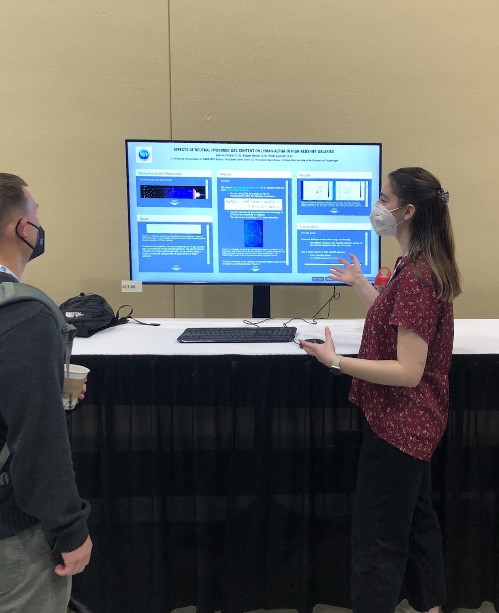

My Astrophysics Research
Welcome to my research pages! I've worked on a variety of astrophysics topics during my undergrad at the University of Cincinnati, as part of an REU at the Cosmic Dawn Center in Copenhagen, while a post-baccalaureate researcher at Los Alamos National Laboratory, and as a current grad student at the University of Pittsburgh. My research interests have covered black holes/AGN, galaxy evolution, and galaxy clusters. For more details, check out the pages for each research topic below (actively under construction)!
You can read my Astrobites articles to learn more about my research, too! One details my work studying high redshift galaxies and one is a group article advertising our JWST NIRSpec IFU data reduction guide. I was also featured in this article about astrophyics at the University of Cincinnati.